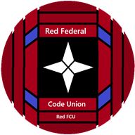

About
About RedFCU
Red Federal Code Union (RedFCU) is a Unity Editor AI assistant project with support for locally run models through Ollama.
Purpose
The project exists to bring AI-assisted development into the Unity Editor, so model-assisted work can happen alongside the code, scenes, and assets you are already working with. RedFCU is being developed as a free project and is not presented as a paid service.
Relationship with Unity
RedFCU is a plugin for the Unity Editor, not a replacement for Unity. Unity remains the environment where you build your project; RedFCU adds an assistant layer inside it.
This website does not claim any affiliation with Unity Technologies or with Ollama. It describes RedFCU's intended role and the tools it supports.
Locally run models through Ollama
For model access, RedFCU supports models that run locally through Ollama. Ollama is a separate project that manages and serves models on your own machine.
RedFCU is not itself an AI model, an AI company, or an online AI service, and this website does not sell or host model access. Not every model will work equally well, not every machine can run a given model, and this site does not claim that every feature works offline. What a model needs depends on the model and on your computer.
What is published
RedFCU is released rather than announced. The project publishes, in its own repository and Discord:
- the Unity package and its release history, for download from GitHub releases (external site);
- the RedFCU Free Use License (RFCUFUL), including its permissions and restrictions;
- a Discord server for setup help and support;
- supported models, supported Unity versions, and system requirements.
What does not exist yet is a Unity Asset Store listing. This site will link to a store page when there is one, and not before. The project's public material credits the project team rather than an individual, and this site follows that wording.
See Licensing for a summary and the full license text.
The name, and what this project is not
The project is called Red Federal Code Union, shortened to RedFCU. Those words are a product name. They do not describe a legal status, a charter, a membership organisation, or a regulator.
- Not a bank or credit union. RedFCU is not a bank, credit union, savings institution, payment provider, or lender. It does not hold deposits, open accounts, issue cards, move money, offer loans, or give financial, investment, or legal advice. There is nothing to sign up for and no money to send.
- Not a government body. RedFCU is not a federal agency, department, regulator, court, or public authority. It has no government funding, mandate, charter, or endorsement, and it cannot act on behalf of any government.
- Not law enforcement. It is not a police force, sheriff, investigative body, or reporting service. It does not investigate anyone, collect reports, or have any authority over people or organisations.
- No affiliation with similarly named organisations. Any resemblance to the name of a credit union, bank, union, agency, or other organisation is unintended. This project is not affiliated with, endorsed by, sponsored by, or partnered with any of them.
- What it actually is. A free plugin for the Unity Editor that connects to AI models you run locally through Ollama. That is the whole product.
RedFCU may offer project verification, creator verification, copyright assistance, project protection, and recommendation programs. These programs are informational and administrative in nature only. They do not constitute legal services, legal advice, legal representation, government certification, copyright registration, trademark registration, law-enforcement activity, or any determination of legal rights.
A verification or protection status records the result of RedFCU's own review. It is not a determination of ownership, a guarantee of legal protection, or a substitute for advice from a qualified lawyer. RedFCU is not a law firm, does not act for any government office, registry, platform, or law-enforcement agency, and does not file applications on anyone's behalf. The programs are described on Programs. Verified Creator and Verified Community are open for applications; the other programs are not open yet.
If you arrived here expecting a financial service or a government service, you are on the wrong website. Nothing on this site is an offer of financial, governmental, or law-enforcement services.
This website
This is a static website with no analytics, no visitor accounts, no backend, and no forms that send data. The Verified Creator and Verified Community application forms build a JSON file in your browser and download it; they transmit nothing. The one hidden panel is a local preview and review tool for the project's own staff, described on Privacy.